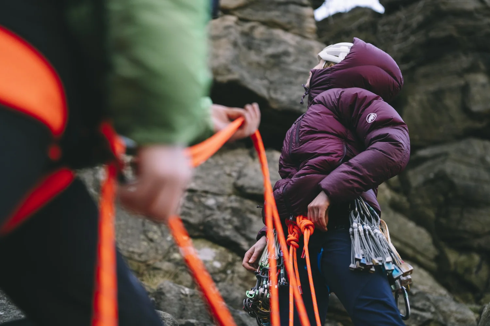
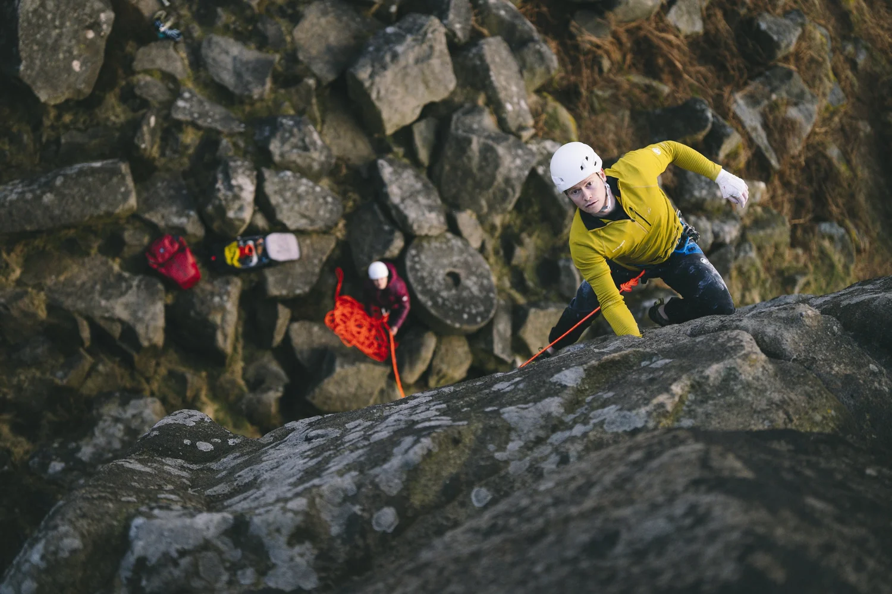

You've just watched an epic reel of someone climbing a high peak in the Alps. You're left in awe, inspired, maybe even a little envious, and you can't wait to get down to your local wall to work on your own project.
It's a busy midweek evening. The place is packed, and everywhere you look people are floating up the walls on holds smaller than a slice of Terry's Chocolate Orange. You feel a twinge of embarrassment as you struggle on your problem, a few grades below theirs.
You chalk up, place your hands on the starting holds, and pull on — but halfway up, you slip off. You glance around. People are laughing nearby; they're not looking at you, but what if they saw? You drift over to a quieter section, avoiding the crowd. Your project, the one you were excited about all week, goes untouched for the rest of the session. You think to yourself: "I'll never be like that guy in the reel."
This is the power of social comparison.
Social comparison, while completely natural and human, belongs to the thinking, self-conscious part of the mind — the part that wonders how we measure up, what others think of us, and whether we're "good enough." But when it comes to performance, that's exactly the part that gets in the way.
"Those moments are hard to describe, but they often share one thing in common: you weren't thinking. You were simply doing."
Think back to a time when you performed at your best — at work, in sport, or even in a social setting. What did that feel like? Those moments often share one thing in common: you weren't analysing, judging, or worrying about who was watching. You were completely absorbed in the task at hand.
When we perform at our best, we enter a flow state. In that state, the part of the brain that compares and evaluates — the one that tracks our place in the social order — quiets down.
What Is Social Comparison?
We are social creatures by nature. Our survival has always depended on belonging, working together, protecting one another, raising children as a group. From tribal campfires to modern communities, being part of the collective has provided us with safety, identity, and meaning.
So when we feel excluded or "less than," it can trigger a deeply primal fear. Our brains evolved to avoid isolation — to conform, to fit in, and to compare ourselves with others to know where we stand.
Psychologically, we can imagine a bell curve of performance. Most people cluster near the middle. When we find ourselves at the lower end, we fear not being good enough; at the higher end, we may fear losing our status. The wider and more visible that curve becomes, the more pressure we feel.

In today's world, that curve is massively stretched. We are constantly bombarded with images of extraordinary success — athletes, influencers, professionals performing at the very top of their game. Social media offers a distorted reality, showing us the highlights of others' lives without the struggle, failure, or downtime in between. Over time, we start to believe these extremes are normal. And when the "average" looks impossibly perfect, it's hard not to feel like we're falling short.
How Does Social Comparison Affect Performance?
This constant stream of comparison activates our need to achieve. We begin to measure our worth through visible, quantifiable outcomes: climbing a harder grade, running a faster time, getting a promotion.
Goals can be motivating — they give us direction and structure. But when they stem from fear of inadequacy rather than genuine curiosity or enjoyment, they begin to work against us. Performance becomes about avoiding failure instead of pursuing growth.
When that happens, our attention shifts away from the process — the very thing that makes us perform well — and fixates on the outcome. Anxiety takes over, and performance drops. Instead of moving freely, we become self-conscious, tense, and disconnected from the joy that brought us to the activity in the first place.
This not only undermines our own performance but can also erode our connection with others. When everyone becomes a competitor, we lose the social bonds that make our pursuits meaningful. Shared joy becomes envy; mutual growth becomes rivalry.
And the truth is, there will always be someone better, faster, stronger, more skilled. The key is not to suppress comparison, but to use it differently.

Better Strategies for Performance and Wellbeing
Social comparison isn't something we can switch off — it's part of being human. But we can learn to work with it so that it fuels motivation rather than drains confidence.
Notice and name it
The first step to managing anything in the mind is noticing. Emotions shape how we see the world, often without us realising. Taking note of what you're feeling — and how you're feeling it — is the first step toward doing something about it.
Remind yourself why you started
It probably wasn't to beat anyone. You began because you enjoyed learning, growing, and feeling your body move. You felt proud of small improvements. You shared those moments with others — over a laugh, a drink, or a story — and that connection made the effort worthwhile.
When comparison starts to creep in, pause and reconnect with that original motivation. Ask yourself:
- What do I actually enjoy about this?
- What part of this challenge feels meaningful to me right now?
Re-anchoring to enjoyment and curiosity helps shift your attention from proving yourself to exploring your potential. After all, this is just an adult form of play.
Refocus on your own process
Everyone's path is different, shaped by unique bodies, experiences, time, and resources. If you're performing at your best, that's the absolute best you can do — and that's enough. Let others' achievements serve as inspiration, not measurement. When you catch yourself comparing, compare instead to your own past self — yesterday, six months ago, two years ago. How proud would your past self be?
Be present
Social comparison lives in the thinking part of the brain. Bring your focus back to your body — the textures under your fingers, the tension through your muscles, the rhythm of your breath. This not only steers you away from spiralling thoughts, it helps your brain learn what it's doing. You'll move better, feel more grounded, and stay connected to the experience.
Connect with others
Ironically, comparison disconnects us from the very people who could support and inspire us. We start seeing potential allies as competitors. Try reversing that. Celebrate someone else's success. Offer encouragement. Ask for tips. When you turn competition into connection, the environment feels safer, more enjoyable, and more collaborative — and you're far more likely to take risks, learn, and perform well.
"Each time you come back to your body and your purpose, you're retraining your brain to perform from presence rather than pressure."